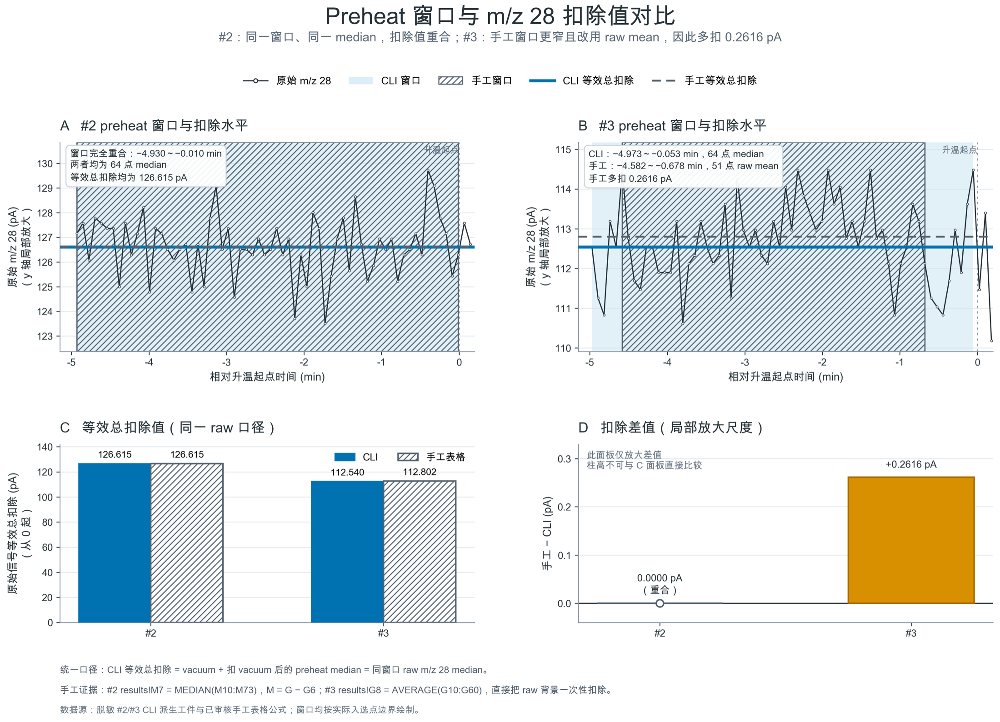
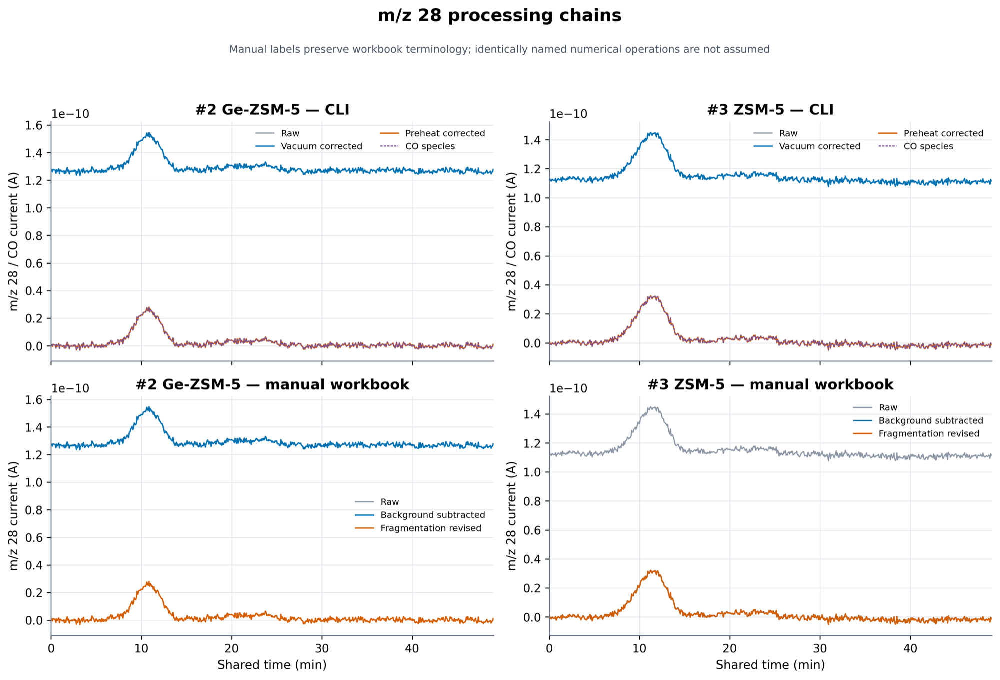
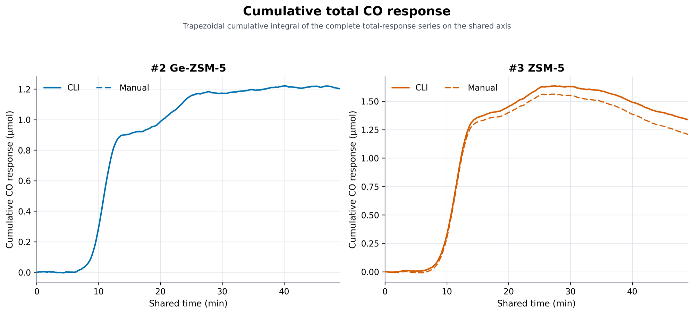

HISTORICAL TPX 0.6 · METHOD-CONTRACT AUDIT
历史 Preheat 窗口： 先对齐选择，再比较工具
这个 #2/#3 真实案例说明：CLI 不会自动消除窗口选择、点数、信号层级和统计量中的研究者判断；人工表格也不天然不可靠。真正应比较的是两边实际执行的处理合同。
- #2 同 64 点、同 median，所以重合
- #3 手工多扣 0.2615686 pA
- 差异先称处理合同差异，不直接称手工误差
结论不是工具之争，而是处理合同。
#2 证明同一 preheat 规则可以跨工具复现；#3 证明同一原始数据在 preheat 规则不同后会形成稳定差异。两者合起来，才是完整的方法学结论。
本页比较什么
把 CLI 与手工表格统一到 raw m/z 28 的等效总扣除口径。
| 对象 | #2 与 #3 的升温前 m/z 28 零点 |
|---|---|
| 关键变量 | 时间零点、窗口、实际点、层级、统计量 |
| 统一单位 | pA，相对于 raw 的有效总扣除 |
| 判断类型 | 描述性方法审计，不替代物理合理性审核 |
本页不证明什么
差异本身不能自动决定哪一个窗口在物理上最合理。
| 不证明 | CLI 天然客观，或表格天然容易出错 |
|---|---|
| 不证明 | −5～0 min + median 对所有实验唯一正确 |
| 不证明 | 下游全部差值只由 preheat 单独造成 |
| 仍需人工 | 结合阀切换、温控、漂移和原始曲线确认窗口 |
比较前必须先确认两条路径读的是同一份原始信号。
-
VACUUM
独立固定电流
I_vac = I_raw − B_vac -
PREHEAT
升温前窗口零点
B_preheat = S(I_vac, t ∈ W) -
CORRECTED
交给下一阶段
I_corr = I_raw − B_vac − B_preheat
B_effective = B_vac + B_preheat
常数 vacuum 下：B_vac + median(I_raw − B_vac) = median(I_raw)
不能把一边的 post-vacuum preheat 增量，与另一边直接从 raw 扣除的一次性总背景直接作比较。
四种“背景”不能混称一个数
| 名称 | 来源与信号层级 | 用途 | 常见混淆 |
|---|---|---|---|
| vacuum baseline | 独立 vacuum 运行测得或明确配置的真空电流 | 从 raw 通道扣除固定仪器/真空电流 | 未测通道不能补成 0 A |
| preheat baseline | 同一次 TPD 的正式升温前窗口 | 消除本次实验的升温前通道零点 | 必须说明它是 raw 总值还是 post-vacuum 增量 |
| calibration background | 已知气体通入前的完整校准采集窗口 | 参与 response factor 估计 | 不等于样品 TPD 的 preheat |
| integration baseline | 定量响应曲线中审核的峰侧区间 | 构造峰下参考线并求面积 | 不能假定它会完全消除上游固定偏移 |
#2 的 preheat 合同相同，故该层重合；#3 的 preheat 合同不同，故该层错开。
上排看实际选区和扣除水平，下排把总扣除与差值分开显示；先看绝对量，再看局部放大的微差。


手工 − CLI 的小差值，所以不能把 D 的柱高与 C 直接作视觉比例比较。点击图可查看原尺寸。
#2：有条件的一致
手工表格明确复刻了 CLI 的实际选择。
| 请求窗口 | −5～0 min |
|---|---|
| 实际窗口 | −4.930000～−0.010233 min |
| 实际点数 | 64 |
| 统计量 | 两边均为 median |
| 表格证据 | results!M7 = MEDIAN(M10:M73)，且 M = raw − vacuum |
| raw 等效总扣除 | 两边均为 126.615 pA |
#3：处理合同不同
两边使用同一 raw 数据，但选择不同。
| CLI | −4.972767～−0.052933 min，64 点，post-vacuum median |
|---|---|
| 手工 | −4.582300～−0.677667 min，51 点，raw mean |
| 表格证据 | results!G8 = AVERAGE(G10:G60)，其中 G 为 raw m/z 28 |
| CLI 总扣除 | 112.5400 pA |
| 手工总扣除 | 112.8015686 pA |
| 手工 − CLI | +0.2615686 pA（约 +0.2324%） |
为避免把“扣除值差”与“校正信号差”混为一谈，本文统一定义
ΔB ≡ B手工 − BCLI，并定义
ΔI ≡ ICLI − I手工 = ΔB。
ΔB = 0.0000 pA
不是因为“表格与 CLI 天然相同”，而是六项处理选择已经对齐。
ΔB = +0.2615686 pA
手工扣得更多，因此手工校正后的 m/z 28 整体更低同样的电流量。
method difference ≠ manual error
只有相对于预先冻结的标准合同，才能判定某个实现是否执行错误。
窗口与 mean/median 都在起作用，偏移还能向下游传播。
用 2×2 交叉计算拆开选择敏感性，再沿真实中间列检查偏移怎样保持、缩放、抵消或累积。
#3 的窗口 × 统计量敏感性
四个格子全部使用同一 raw m/z 28，只改变窗口和统计量。
| 实际窗口 | 点数 | median | mean | mean − median |
|---|---|---|---|---|
CLI 窗口 −4.972767～−0.052933 min | 64 | 112.5400 pA | 112.6723438 pA | +0.1323438 pA |
手工窗口 −4.582300～−0.677667 min | 51 | 112.7600 pA | 112.8015686 pA | +0.0415686 pA |
固定 median 时，换窗口增加 0.2200 pA；再在手工窗口把 median 换成 mean，增加 0.0415686 pA，合计 0.2615686 pA。若沿另一条路径分解，各项归因数值会改变，所以不能把它们当作彼此独立的固定“贡献率”。
较窄窗口也不自动更稳定
| 诊断 | CLI 64 点窗口 | 手工 51 点窗口 | 怎样读 |
|---|---|---|---|
| 线性斜率 | +0.0914 pA/min | +0.1805 pA/min | 两段都有轻微上移，较窄窗口斜率反而更大 |
| 前半段 median | 112.540 pA | 112.435 pA | 前后半段水平变化比只看总体 SD 更直接 |
| 后半段 median | 112.970 pA | 113.190 pA | |
| 后半段 − 前半段 | +0.430 pA | +0.755 pA | 窗口中央较窄不等于没有趋势 |
| 标准差 / MAD | 0.992 / 0.650 pA | 0.912 / 0.640 pA | 离散略小，但不能抵消趋势证据 |
线性斜率为 raw pA 对 program_time_min 的普通最小二乘斜率；SD 为样本标准差（ddof=1）；MAD 为未缩放的 median(|x − median(x)|)。前后半段按时间顺序拆分：64 点窗口为 32/32 点，51 点窗口为前 26/后 25 点。


约 +0.044 的含义：下游系统性偏移，不是另一种随机误差
在 #3 的共同 628 个比较点上，raw m/z 28 完全相同；背景/preheat 校正后，CLI − 手工 恒为约 +0.2615686 pA。随后，两条原生完整处理链分别采用各自的 Ar/m/z 40 处理与 calibration factor（CLI 0.9069249122；手工 0.9074751411），再经过 CO/Ar、流量换算与 60 mg 质量归一化。最终 CO 响应中观察到的 CLI − 手工 平均为 +0.0441922 µmol·min⁻¹·g⁻¹，中位数为 +0.0443531 µmol·min⁻¹·g⁻¹，范围约 +0.0409942～+0.0450764 µmol·min⁻¹·g⁻¹。这些点覆盖共同时间轴约 0～48.9641 min 的完整总响应，并非正式积分窗口或基线扣除响应。
| 比较层级 | 观察值或 CLI − 手工 | 判读 |
|---|---|---|
| raw m/z 28 | 0 pA | 输入信号本身相同 |
| 背景/preheat 校正 m/z 28 | +0.2615686 pA | 手工总扣除更大，所以手工校正曲线更低 |
| 物种 CO 电流 | +0.2615686 pA | 本案例的映射没有消除该常数差 |
| calibration factor | CLI 0.9069249122手工 0.9074751411 | 完整下游合同并非只改变 preheat；Ar/m/z 40 处理也有口径差异 |
| 质量归一化 CO 响应 | 平均 +0.0441922 µmol·min⁻¹·g⁻¹ | 这是两条原生完整处理链的总观察差，不是 preheat 的单独因果效应 |
上述逐层结果近乎平行只说明主要形状相同；约 +0.044 µmol·min⁻¹·g⁻¹ 是两条原生完整处理链观察到的系统差，不是可由“手工”身份直接定性的误差，更不能直接视为 0.2615686 pA 单独传播得到的纯 preheat 效应。只有固定 Ar/m/z 40、calibration factor 和其他阶段做逐项反事实重算，才能定量归因给 preheat。



研究者确认合同，CLI 固定执行并留痕。
手工和 CLI 都应留下足够信息，使另一位研究者能够看到“究竟选了哪些点、为什么这样选”。
每次 preheat 至少保存这些字段
| 类别 | 必须或建议保存的内容 |
|---|---|
| 实验与输入身份 | experiment id、样品、批次、采集日期、原始文件身份与内部时间范围 |
| 信号 | m/z、源列、单位、增益与归一化状态 |
| 时间对齐 | 零点定义、对齐方法、温控来源、跨日和越界规则 |
| 请求窗口 | requested start/end、边界是否包含 |
| 实际窗口 | actual first/last、row id 或等价索引、实际点数 |
| 数据层级 | raw、vacuum-corrected 或其他明确阶段 |
| 统计与稳定性 | 正式 estimator、mean、median、SD、MAD/IQR、斜率、前后半段差 |
| Vacuum 与 preheat | 各自数值、来源、精度，以及 raw 等效总扣除 |
| 表格证据 | 工作表、单元格范围、公式、排除点和复制/筛选规则 |
| CLI 证据 | 软件版本、完整命令、配置、estimate、实际选中点和 ProcessingRecord |
| 审核 | 操作者、审核者、日期、选择理由和例外理由 |
| 下游影响 | 对物种电流、response factor、阶段值、面积与峰结果的传播检查 |
推荐复核顺序
- 01冻结输入与零点
先确认数据身份和升温起点；否则相对窗口没有共同坐标。
- 02导出实际入选点
保存每一个点，不只保存请求端点和最终常数。
- 03检查稳定性
看趋势、尖峰、前后半段、mean/median、SD/MAD 与实验事件。
- 04锁定并传播复核
研究者确认规则后再批量执行，并沿后续阶段检查影响。
研究者负责
决定处理合同的物理意义与例外条件。
| 判断 | 时间零点、窗口是否代表真实稳定状态 |
|---|---|
| 选择 | 统计量、异常点、calibration、integration 和峰参数 |
| 审核 | 差异是否影响科学结论，何时允许例外 |
CLI 负责
把已确认规则稳定执行，并保留可机器核验的阶段证据。
| 执行 | 按规则选点、计算、拒绝不足点数和错误顺序 |
|---|---|
| 报告 | 实际窗口、点数、中间值、单位和数据层级 |
| 留痕 | 版本、配置、输入输出身份、参数指纹和阶段顺序 |
本案例留下的研究者问题
- 是否把
−5～0 min + median定为这一系列实验的默认合同，而不是天然真理； - 窗口斜率、前后半段差或 MAD 到什么阈值时必须重选；
- 正式结果是否同时保存 mean、median、MAD 与窗口斜率诊断；
- #3 原 51 点窗口是否有尚未记录的实验事件依据；
- 固定其他处理阶段后，#3 最终约
+0.044中有多少可归因于 preheat； - 是否把本页清单固化到实验记录模板和 CLI 审核报告。
先审核选择，再让工具复现。
#2 说明同一 preheat 处理合同可以跨 CLI 与表格复现；#3 说明窗口及其入选点、统计量会造成稳定且可传播的数值差，而信号层级的表达主要影响可比性与可追溯性。最重要的不是给工具贴“客观”或“主观”标签，而是让科研选择明确、可检查、可重复。